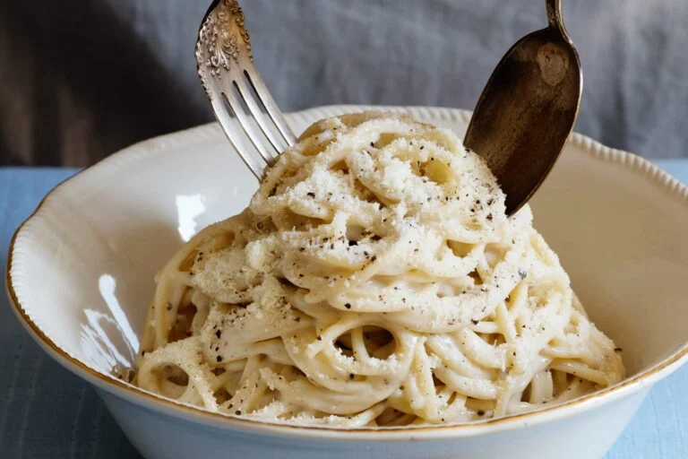

Cacio e Pepe

Description
This spaghetti cacio e pepe recipe has been made in our family for many years, and everyone loves it.
It is a very basic and easy variation on mac and cheese.
Ingredients
- 1 pound spaghetti
- 6 tablespoons olive oil
- 2 cloves garlic, minced
- 2 teaspoons ground black pepper
- 1 ¾ cups grated Pecorino Romano cheese
Steps
- Bring a large pot of lightly salted water to a boil. Cook spaghetti in boiling water, stirring occasionally, until tender yet firm to the bite, about 12 minutes. Reserve 1 cup cooking water, then drain spaghetti.
- Heat olive oil in a large skillet over medium heat. Cook and stir garlic and pepper in hot oil until fragrant, 1 to 2 minutes. Add cooked spaghetti and Pecorino Romano cheese. Ladle in 1/2 cup reserved cooking water; stir until cheese is melted, about 1 minute. Stir in more cooking water as needed, 1 tablespoon at a time, until sauce coats spaghetti, about 1 minute more.
Tips
You can substitute butter for olive oil.
Adjust the amount of cooking water added in step 2 for a thicker or thinner sauce. If you add too much water, add some more cheese.
I add flavor-enhancing ingredients — like pancetta — to this recipe depending on my main dish; I always experiment when creating food.
Home